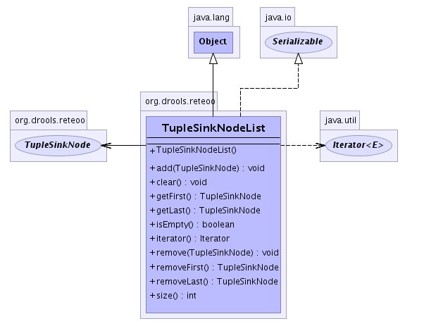

so that it references
the node before and after it. This way a node can be removed without having to scan the list to find it. This class
does not provide an Iterator implementation as its designed for efficiency and not genericity. There are a number of
ways to iterate the list.
Simple iterator:
for ( LinkedListNode node = list.getFirst(); node != null; node = node.getNext() ) {
}
Iterator that pops the first entry:
for ( LinkedListNode node = list.removeFirst(); node != null; node = list.removeFirst() ) {
}
- See Also:
- Serialized Form
-
- 
| Methods inherited from class java.lang.Object |
clone, equals, finalize, getClass, hashCode, notify, notifyAll, toString, wait, wait, wait |
TupleSinkNodeList
public TupleSinkNodeList()
- Construct an empty
LinkedList
add
public void add(TupleSinkNode node)
- Add a
TupleSinkNode to the list. If the LinkedList is empty then the first and
last nodes are set to the added node.
- Parameters:
node - The TupleSinkNode to be added
remove
public void remove(TupleSinkNode node)
- Removes a
TupleSinkNode from the list. This works by attach the previous reference to the child reference.
When the node to be removed is the first node it calls removeFirst(). When the node to be removed is the last node
it calls removeLast().
- Parameters:
node - The TupleSinkNode to be removed.
getFirst
public final TupleSinkNode getFirst()
- Return the first node in the list
- Returns:
- The first
TupleSinkNode.
getLast
public final TupleSinkNode getLast()
- Return the last node in the list
- Returns:
- The last
TupleSinkNode.
removeFirst
public TupleSinkNode removeFirst()
- Remove the first node from the list. The next node then becomes the first node. If this is the last
node then both first and last node references are set to null.
- Returns:
- The first
TupleSinkNode.
removeLast
public TupleSinkNode removeLast()
- Remove the last node from the list. The previous node then becomes the last node. If this is the last
node then both first and last node references are set to null.
- Returns:
- The first
TupleSinkNode.
isEmpty
public final boolean isEmpty()
- Returns:
- boolean value indicating the empty status of the list
clear
public void clear()
- Iterates the list removing all the nodes until there are no more nodes to remove.
size
public final int size()
- Returns:
- return size of the list as an int
iterator
public java.util.Iterator iterator()
- Returns a list iterator
- Returns:
 org.drools.reteoo.TupleSinkNodeList
org.drools.reteoo.TupleSinkNodeList